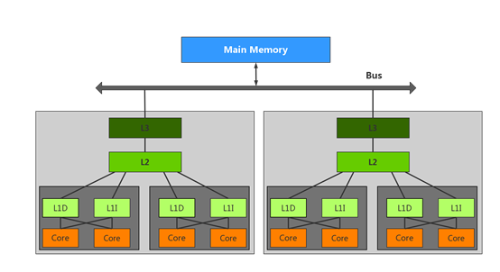
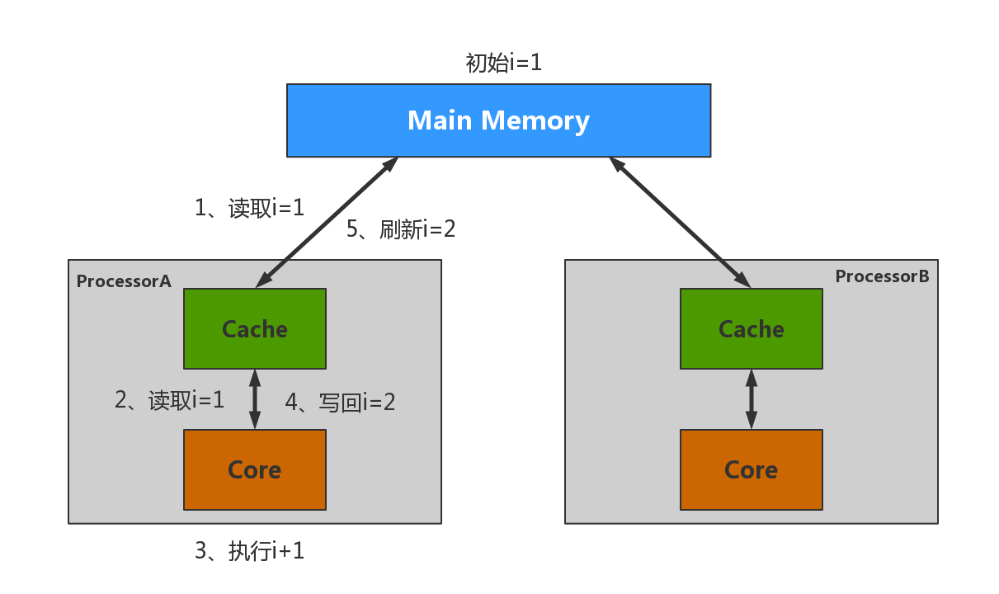
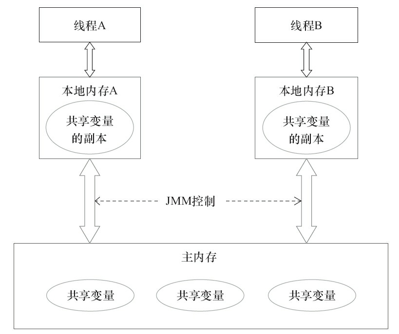
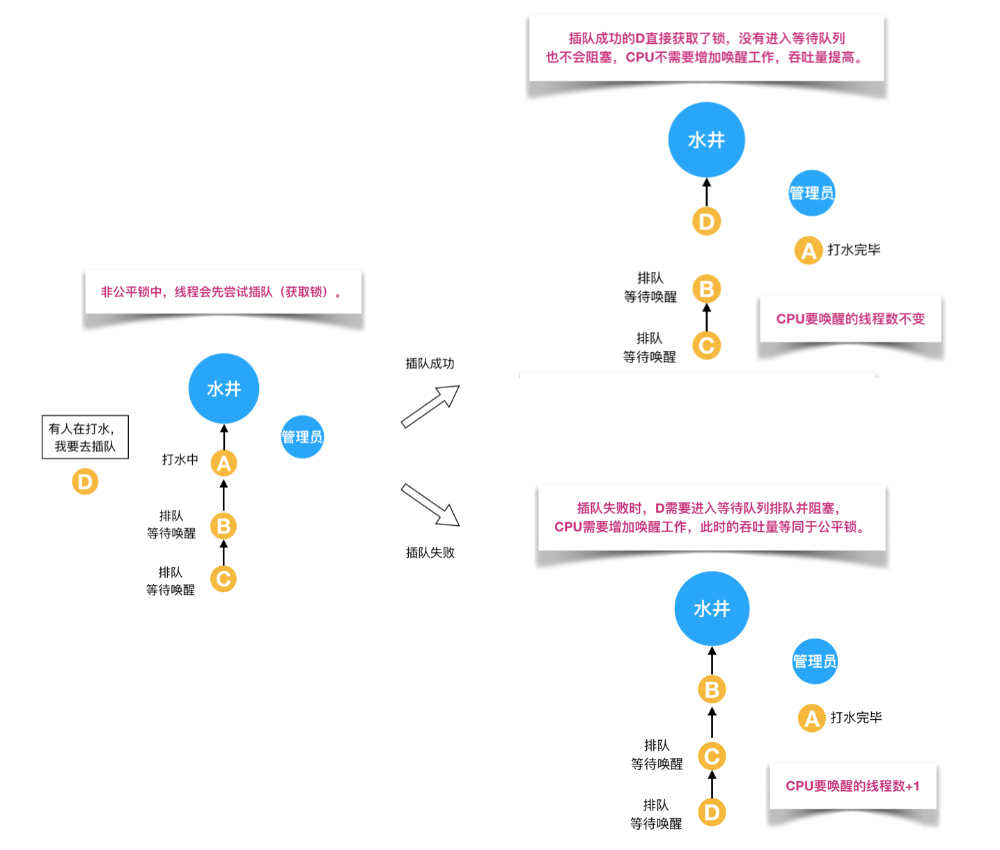
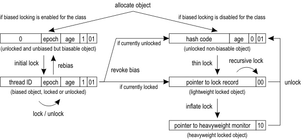

前言
什么是锁
简而言之，锁是对资源的一种保护措施。在多线程编程中，锁是对多线程访问资源的一种控制方式。
为什么需要锁
CPU cache
当代CPU为了解决计算速度与从内存读取速度的匹配，在CPU中添加了L1, L2,L3缓存，如下图：

CPU在读取数据的时候并不会直接去内存中找，而是先在各级缓存中读取，读取不到才去主存中找，之后会缓存在内存中，以便后续计算继续使用，从而降低从主存中读取数据带来的延迟。
当有多个缓存的时候就会带来缓存一致性问题，如下：

启动俩个线程去执行i++，因为i++不具备原子性，所以在A读取到i后，在计算完毕刷新回主存之前，B很可能读取到了i，这时i依然是初始值1，这样当A计算完++将i=2刷新回主存，B计算完后也将i=2刷新回了主存，虽然总共执行了俩次i++，但是i的结果等于2。
缓存不一致的解决
总线（bus）加锁
CPU通过总线与内存通信，如果对总线加锁相当于阻塞其他CPU对内存的访问，从而使得只能有一个CPU使用这个变量的内存。
缓存一致性协议
由于总线锁住期间，其他CPU无法访问内存导致效率低下，所以提出只锁数据所在缓存行。实现这一策略例如M（Modified）E（Exclusive）S（Share ）I（Invalid）协议。MESI协议这里不详细讲解，有兴趣的可以了解Cache一致性协议MESI。通俗来的说MESI协议保证一个CPU对一个数据修改时会通知其他CPU缓存该数据无效，使用时需要从主存中重新读取。但是MESI协议可以保证缓存的一致性，但是无法保证实时性。
JMM
JMM，Java内存模型（java memory model），和JVM内存模型不同，后者指的是JVM内存分区，例如堆，栈，本地方法栈这些，而JMM是一种虚拟机规范。
结合前面的CPU cache图再来看一下JMM抽象图

从抽象的角度来看，JMM定义了线程和硬件内存之间的抽象关系
- 线程之间共享变量存储在主内存中（Main Memory）
- 每个线程包含一个私有的本地内存，本地内存是JMM的一个概念，并不真实存在，它包括了L1,L2,L3三级缓存。
线程安全问题
从前面的分析得知，并发编程中，以下情况可能出现线程安全的问题：
- 多个线程在操作共享的数据。
- 操作共享数据的线程代码有多条。
- 当一个线程在执行操作共享数据的多条代码过程中，其他线程参与了运算。
在讨论如何解决线程安全问题，为保证数据安全需要满足三大特性：原子性、可见性、顺序性。
原子性
一个操作中可能包含多个自操作，要么全都执行，要么全不执行（锁，CAS）
可见性
多个线程并发访问共享变量时，一个线程对共享变量的修改，其他线程能立即看到（锁，volatile）
顺序性
程序执行的顺序按照代码的先后顺序执行，不会被处理器重排序（锁，volatile）
这里可以发现，锁是解决线程安全问题的一个常用且重要措施。
Java锁分类
在详细讲解Java锁之前，先来看一下Java中的“锁“有哪些
- 悲观锁/乐观锁
悲观锁和乐观锁看待线程同步的角度不同。
悲观锁认为本线程在使用的时候一定会有其他的线程来修改数据，因此在获取数据之前先加锁。Java中，synchronized关键字和Lock的实现类都是悲观锁。
乐观锁认为，不会有别的线程来修改数据，所以不会添加锁。在本线程修改数据的之前判断一下数据有没有被其他线程修改，如果有则执行特殊操作（报错或者重试），如果没有则更新。例如CAS无锁算法。

- 自旋锁/自适应自旋锁
自旋锁是指获取锁的线程不会立即阻塞，而是采用循环的方式去获取锁，这样的好处是减少CPU上下文切换的消耗，缺点就是循环会带来CPU消耗。在java中，自旋锁是利用CAS循环，循环次数超过限定次数（默认是10次，可以使用-XX:PreBlockSpin来更改）还未获取到锁则挂起。
自适应自旋锁和自旋锁是类似的，不同的是前者循环次数不固定。如果该线程刚刚获取的过锁，则jvm就会允许自旋相对更长的时间，如果自旋很少成功获得，那再尝试自旋获取时就直接阻塞，省掉自旋带来的CPU消耗。
- 无锁/偏向锁/轻量级锁/重量级锁
这四种锁是锁的状态，并且都是针对synchronized的优化。
无锁：资源未加锁，可以多个线程同时访问修改，但是只有一个线程可以修改成功。线程通过通过修改锁状态升级为偏向锁。
偏向锁：资源一直再被同一个线程访问，则线程自动获取锁，降低获取锁的代价。当有其他线程访问偏向锁时，偏向锁升级为轻量级锁
轻量级锁：线程通过自旋的方式获取锁不会阻塞，当有一个线程持有锁，一个线程在自旋获取锁，又来一个线程尝试获取锁时，锁升级为重量级锁。
重量级锁：等待锁的线程都会进入阻塞状态。
- 公平锁/非公平锁
公平锁是指多个线程获取锁的顺序依照申请锁的顺序来获取锁，非公平锁则可以直接尝试获取锁无需等待。俩者相比，公平锁不会发生饿死的情况，但是吞吐率相对于非公平锁较低。


- 可重入锁/非可重入锁
可重入锁指持有锁的线程可以再次获取锁，也叫递归锁。而非可重入锁则不允许持有锁的线程再次获取该锁，此时会发生死锁。Java中synchronized和ReenterantLock都是可重入锁。


- 共享锁/独占锁
共享锁就是多个线程可以同时获取锁，独占锁也称排他锁，只允许一个线程拥有锁。synchronized和ReenterantLock都是独占锁，ReenterantReadWriteLock中的读锁是共享的。
接下来，将对Java中的各种锁进行详细介绍。
synchronized
概念
synchronized 是Java中加锁的关键字，被synchronized加锁的代码块同一时间只能有一个线程执行，其他线程必须等待。
应用
修饰实例方法 作用于实例对象，进入同步代码块前要先获取实例对象锁。
public class AccountingSync implements Runnable{ |
上述代码中，开启了俩个线程去执行i++，因为i++非原子性，使用加锁来保证线程安全。
这里可以看到synchronized修饰的是实例方法，也就是说作用于实例对象，由于只创建了一个实例instance，线程执行increase方法时必须先获取instance锁。当t1获取到instance锁时，t2必须等到t1释放锁后，t2才能执行increase方法，如此一来便保证了线程安全。如果上述代码中去掉synchronized，结果很可能小于20000。如果创建了多个对象是否还能保证线程安全？答案显然是否定的。那么如何在创建了多个对象仍然保证线程安全？
修饰静态方法 作用于类的class对象，进入同步代码块前要先获取类的class对象锁。
public class AccountingSyncClass implements Runnable{ |
上述代码中，synchronized修饰的静态方法，锁对象是便是AccountingSyncClass类的class对象。这样创建无论几个实例也能保证线程安全。
修饰方法块，指定加锁对象，作用于指定对象，进入同步代码块前要先获取指定对象锁。
public class AccountingSync implements Runnable{ |
上述代码中，指定加锁对象是instance锁，当线程执行到同步块是需要首先获取instance锁。
原理
Monitor对象
什么是Monitor？可以把它理解为 一个同步工具，也可以描述为 一种同步机制，它通常被描述为一个对象。在Java的设计中，每一个Java对象从创建出来就带有一把“锁”，称为内部锁或者Monitor锁。
每一个对象都存在一个monitor与之关联，当一个monitor被个线程持有后，它便处于锁定状态。在Java虚拟机(HotSpot)中，monitor是由ObjectMonitor实现的，其主要数据结构如下（位于HotSpot虚拟机源码ObjectMonitor.hpp文件，C++实现的）
ObjectMonitor() { |
在ObjectMonitor中有俩个队列，WaitSet和 EntryList，用来保存ObjectWaiter对象列表（每个等待获取锁的线程都会被封装成ObjectWaiter对象），owner用来保存持有ObjectMonitor对象的线程。
当有多个线程访问同步代码时，先进入EntryList集合， 当获取到monitor后，owner指向该线程, 并把count加1。当线程调用wait()方法时，将释放持有的monitor，onwer复位为null, count减1，并进入WaitSet集合等待被唤醒。当线程执行完毕也将释放monitor，onwer复位为null, count减1。如下图所示：

synchronized同步代码块
public class SyncCodeBlock { |
编译上述代码，并使用 javap -verbose 命令获取反编译后的字节码如下: （省略非必要信息）
public class SyncCodeBlock |
从上述的字节码中可知，同步语句块使用的是monitorenter和monitorexit指令，其中monitorenter指令指向同步代码快的开始位置，monitorexit指向同步代码块的结束位置。
当执行monitorenter指令时，当前线程将试图获取 SyncCodeBlock实例锁所对应的monitor的持有权。当当前线程获取到monitor时，则monitor的owner指向当前线程，count加1，获取锁成功。当有其他线程尝试获取锁时，则会进入monitor的EntryList或者WaitList等待。
上述字节码中还有一点，有一个monitorenter,却有俩个monitorexit。正常情况下，同步代码块执行完毕释放monitor，但是如果如果同步代码块发生异常会无法执行monitorexit，这样monitor就无法释放。这个时候第二个monitorexit就起到作用了，它就是异常结束时释放monitor的指令。
synchronized同步方法
public class SyncCodeBlock { |
反编译字节码如下（省略相关性不高内容）
public synchronized void syncTask(); |
从字节码中可以看到，synchronized修饰的方法并没有monitorenter和monitorexit指令，但是flag中多了一个ACC_SYNCHRONIZED。这个ACC_SYNCHRONIZED用来表明该方法是一个同步方法，JVM通过这个flag执行相应的同步调用，类似同步方法块，这里就不再赘述。
以上便是synchronized锁的基本原理。
优化
从上一节的内容中了解到，synchronized的实现依赖于对象的monitor实现，而monitor又是基于底层操作系统的Mutex Lock实现，而基于Mutex Lock实现的同步必须经历从用户态到内核态的转换，这个开销太大，频繁的通过synchronized实现同步会严重影响程序的效率，这也是synchronized被称为重量锁的原因。
JDK1.6之后对synchronized做了优化，引入“偏向锁”和“轻量级锁”。JDK1.6以后锁一种有四种状态，无锁，偏向锁，轻量级锁，重量级锁，它们会随着锁的竞争而逐渐升级，而且锁可以从无锁升级到重量级锁，但是不能降级。
在讲锁如何升级之前先来看一下锁状态保存的位置
Java 对象头（header）
在HotSpot虚拟机中，对象在内存中存储的布局可以分为三部分：对象头（header）,实例数据（data）和对齐填充（padding）。
普通对象的header包含俩部分：Mark Word和Class Metadata Address，数组对象还包括一个Array Length。synchronized用的锁就存在Mark Word中
| 长度 | 内容 | 说明 |
|---|---|---|
| 32/64bit | Mark Word | 对象的HashCode, GC分代年龄，锁状态标志，线程持有的锁，偏向线程ID，偏向时间戳等等，存储对象运行时数据。 |
| 32/64bit | Class Metadata Address | 类型指针指向对象的类元数据 |
| 32/64bit | Array length | 数组长度 |
下表是Mark Word在32bit JVM的存储结构

锁状态转化
关于这四种锁状态是如何转换的，如下图所示：

偏向锁
在分配对象的时候可根据class元数据中bias位来确认，该类型的对象是否允许被偏向锁定。如果允许，就如图上图中左边一支，此时的hashcode位被Thread Id和epoch占位（如果显式调用对象的hashcode（）方法，thread Id和epoch会被hashcode重新占位）。初始状态下为匿名偏向(Anonymously biased)，此状态下thread Id为0，意味着这个偏向锁还没有偏向线程。当第一个线程试图获取该锁时，采用CAS将thread ID为本线程ID。
偏向锁-无锁，偏向锁-轻量级锁
当有其他线程尝试获取偏向锁时，会首先检查thread ID是否为本线程ID，如果不是，则CAS替换。这个时候替换的期望值时0。如果CAS失败，说明该偏向锁不再处于有同步无竞争状态，需要升级或撤销。在HotSpot中偏向锁的撤销时JVM处于在全局安全点被执行的（stop-the-world），在撤销过程中，撤销者会遍历当前偏向线程的锁记录，由此判断当前对象是否被锁定。如果偏向锁被线程持有，则升级偏向锁到轻量级锁，如果未被持有，则偏向锁重偏向或者进入无锁状态。这里进入重偏向或者撤销偏向锁至无锁，取决于偏向锁重偏向次数与相隔时间，如果频繁重偏向说明此场景不适合偏向锁，则撤销。
无锁-轻量级锁
如果对象处于无锁状态时（锁标志位01），JVM首先将当前线程的栈中建立一个名为锁记录（Lock Record）的空间，用于存储锁对象目前的Mark Word拷贝。然后CAS尝试将对象的Mark Word更新为指向Lock Record的指针。如果更新成功，那么该线程就获取到了锁，并且将锁标记为替换位00。
如果获取失败，首先检查Mark Word是否指向当前线程的栈帧，如果是则执行，如果不是尝试自旋。如果有俩个以上的线程竞争同一个锁，那轻量级锁不再有效，要膨胀位重量级锁，锁状态值变为10。Mark Word中存储的就是指向重量级锁的指针，后面等待的线程要进入阻塞状态。
轻量锁的解锁过程也是利用CAS进行，将栈帧中锁记录替换回原来的Mark Word中，如果替换成功，整个同步过程就完了，如果失败，则说明有其他线程尝试过获取该锁，那么就要在释放锁的同时，唤醒被挂起的线程。
无锁-重量级锁
当锁升级为重量级锁，锁标记为替换为10，线程获取重量级锁失败后将直接进入Monitor的WaitSet队列中。
下图是一张详细过程图

锁状态的对比
| 锁状态 | 优点 | 缺点 | 适用场景 |
|---|---|---|---|
| 偏向锁 | 消耗小，替换线程ID就行 | 如果存在竞争，会带来锁撤销的消耗 | 只有一个线程访问同步块 |
| 轻量锁 | 竞争的线程不会阻塞，提升响应速度 | 如果始终得不到锁，自旋会会消耗CPU | 追求响应速度，同步块很快 |
| 重量锁 | 线程竞争直接挂起，不会消耗CPU | 线程阻塞，响应时间缓慢 | 追求吞吐量，同步块执行速度慢 |
总结
- synchronized是java加锁的关键字，可修饰实例方法，静态方法或者方块；
- synchronized的依赖于monitor对象，而monitor对象的实现基于底层操作系统Mutex Lock的实现；
- 基于Mutex Lock实现的同步需从用户态切换到内核态，消耗大，成本高，这也是synchronized被称为重量锁的缘由；
- JDK1.6对synchronized做了大量优化，加入偏向锁和轻量级锁俩种锁状态；
- 锁状态信息存储在java对象头中。
volatile
概念
volatile常被称为轻量synchronized，在并发编程中也是很重要的一个角色。
volatile是Java的一个关键字，用来修饰共享变量。
作用
LOCK前缀
有以下一段java代码如下：
instance = new Singleton(); // instance是volatile变量 |
转变成汇编代码。如下：
0x01a3de1d: movb $0×0,0×1104800(%esi);0x01a3de24: lock addl $0×0,(%esp); |
可以看到多了一层lock前缀，在intel手册中对lock前缀的说明如下：
- 确保对内存的读-改-写操作原子执行。在Pentium及Pentium之前的处理器中，带有lock前缀的指令在执行期间会锁住总线，使得其他处理器暂时无法通过总线访问内存。很显然，这会带来昂贵的开销。从Pentium 4，Intel Xeon及P6处理器开始，intel在原有总线锁的基础上做了一个很有意义的优化：如果要访问的内存区域（area of memory）在lock前缀指令执行期间已经在处理器内部的缓存中被锁定（即包含该内存区域的缓存行当前处于独占或以修改状态），并且该内存区域被完全包含在单个缓存行（cache line）中，那么处理器将直接执行该指令。由于在指令执行期间该缓存行会一直被锁定，其它处理器无法读/写该指令要访问的内存区域，因此能保证指令执行的原子性。这个操作过程叫做缓存锁定（cache locking），缓存锁定将大大降低lock前缀指令的执行开销，但是当多处理器之间的竞争程度很高或者指令访问的内存地址未对齐时，仍然会锁住总线。
- 禁止该指令与之前和之后的读和写指令重排序。
- 把写缓冲区中的所有数据刷新到内存中。
则被volatile修饰的变量包含俩层含义
保证内存可见性
volatile使用Lock前缀的指令禁止线程本地内存缓存（CPU缓存），参考lock前缀说明第3条。
线程写入变量时不会写入本地内存而是会直接刷新回主存。又因为CPU实现了缓存一致性协议，在变量写回后会通知其他CPU中缓存的此变量无效，这样其他CPU在处理该变量时会从主存中读取。
静止指令重排序
为了提升计算效率，CPU可能会将指令重排序，但这样会影响到多线程并发执行的正确性。
禁止指令重排序有两层意思：1）当程序执行到volatile变量的读操作或者写操作时，在其前面的操作的更改肯定全部已经进行，且结果已经对后面的操作可见；在其后面的操作肯定还没有进行； 2）在进行指令优化时，不能将在对volatile变量访问的语句放在其后面执行，也不能把volatile变量后面的语句放到其前面执行，参考lock前缀指令第2条。
volatile满足可见性和顺序性，那依据lock前缀说明第一条原子执行，那么它不是还满足原子性？
我们先来看下面的例子。
应用
错误示例
来看下面这个例子
public class Test { |
例子中启动了10个线程去执行1000次i++,那么结果会是多少呢？
答案是一个小于10000的数，并不是理想的10000。
假设这样一个场景，线程1从主存中读取到i的值等于0，将i的值在寄存器中+1，这时候并没有更新i，还只是一个中间值。然后线程2从主存中读取i的值，这个时候因为线程1没有更新i，虽然线程2依然从主存中读取数据，但是读取到的值是0，线程2计算后i=1刷新回主存，由于线程2更新了i，所以线程1中的i=0缓存失效，将i=1重新读取到缓存中，接着线程1恢复，将i=1写回缓存再刷新回主存。这样就导致了计算结果小于预期。
那么为什么volatile不是原子性的？
首先来看一下，inc++其实时三部分组成，读值，加1，写值，而volatile修饰的变量，会在读命令前lock前缀，在写值命令前加lock前缀，这是什么意思呢？
读，是原子性的，写，是原子性的，读-改-写不是原子性的！
正确用法
虽然volatile容易出错，但是如果正确使用在某些场景下要比synchronized要高效很多。
要正确使用volatile就要牢记volatile的限制——只有在状态真正独立于程序内其他内容时才能使用volatile。
状态标志
volatile static boolean shutdownRequested = false;
public void shutdown() { shutdownRequested = true; }
public void doWork() {
while (!shutdownRequested) {
// do stuff
}
}利用volatile的可见性，当有线程调用shutdown()，可以立刻检测到。
double check
class Singleton{
private volatile static Singleton instance = null;
public static Singleton getInstance() {
if(instance==null) {
synchronized (Singleton.class) {
if(instance==null)
instance = new Singleton();
}
}
return instance;
}
}这是一个单例模式的double check例子，首先来讲一下如果不加volatile会怎么样
private tatic Singleton instance = null;
public static Singleton getInstance() {
if(instance==null) {
synchronized (Singleton.class) {
if(instance==null)
instance = new Singleton();
}
}
return instance;
}执行顺序是
- 第一次检测instance是否为null，如果否进行第二步
- 获取锁
- 第二次检测instance是否为null，如果否初始化instance
这样看起来没什么问题，但是有一个由于指令乱序造成的隐患。
初始化instance可分解为三个步骤：
- 分配内存空间（memory = allocate()）
- 初始化对象（ctorInstance(memory)）
- 将对象指向刚分配好的内存空间（instance = memory）
但是，编译器为了性能的原因，可能将2，3俩步重排序，然后结构就成了：
- 分配内存空间
- 将对象指向刚分配好的内存空间
- 初始化对象
这样重排序后会发生以下这种场景
Time Thread A Thread B t1 instance==null t2 获取锁 t3 再次instance==null t4 分配内存空间 t5 指向内存空间 t6 检测instance!=null t7 访问instance（此时isntance尚未初始化） t8 初始化instance 这个问题的解决方案就是将instance修饰为volatile，volatile会禁止步骤2，3的重排序。
总结
- volatile关键用来修饰共享变量，被volatile修饰包含俩层含义，可见性和顺序性。
- volatile不保证原子性，所以不能用synchronized一样使用
CAS
概念
CAS全称是compare and swap, 是一种在并发编程中的同步机制。CAS不是Java特有，是操作系统提供的机制。CAS操作包含三个操作数，内存位置，预期值和新值。CAS的实现逻辑是将内存位置的数值与预期值相比较，如果相等，则将内存位置处的值替换为新值，如果不相等，则不替换。
作用
在讲volatile的时候有用过一个例子
public class Test { |
由于volatile无法保证原子性，所以存在线程安全问题。
解决办法：
- 使用synchronized修饰increase()方法
public synchronized void increase() { |
- 使用Java atomic包中的并发包原子操作类
public static AtomicInteger race = new AtomicInteger(); |
atomic包中的原子类利用的就是CAS算法，getAndIncrement()就是原子操作加1。
原理
先来看一下ActomicInteger中的源码
public final int getAndIncrement() { |
再深入到unsafe类中
public final int getAndAddInt(Object var1, long var2, int var4) { |
unsafe 的 getIntVolatile是一个native方法, va1是AtomicInteger实例， var2是地址偏移量，var5就是AtomicInteger中保存的值了
重点来了，compareAndSwapInt(var1, var2, var5, var5 + var4)方法，从方法名就可以看出这是CAS的关键，var5 是期望值，var5+var4是更新值，如果更新成功，则任务结束，如果失败则以自旋的方式继续进行CAS操作。
再深入到compareAndSwapInt(Object var1, long var2, int var4, int var5)，在HotSpot UnSafe.cpp里找到它的实现
UNSAFE_ENTRY(jboolean, Unsafe_CompareAndSwapInt(JNIEnv *env, jobject unsafe, jobject obj, jlong offset, jint e, jint x)) |
可以看到这里调用Atomic::cmpxchg(x, addr, e)，其中x是更新值，addr是偏移地址，e是旧值。
再来看一段Linux平台上cmpxchg的实现
inline jint Atomic::cmpxchg (jint exchange_value, volatile jint* dest, jint compare_value) { |
os::is_MP(): 判断当前系统是否为多核，如果多核就要在总线锁。_asm_说明是ASM汇编，volatile禁止编译器优化重点来了，
LOCK_IF_MP(%4) "cmpxchgl %1,(%3)"这是是一段汇编模板，它的意思是如果是多核系统就给cmpxchglCPU指令加LOCK前缀，其中cmpxchgl指令就是具体实现CAS的指令，做比较后替换操作。具体查看CMPXCHG。
我们回忆一下前面讲到LOCK前缀意义：
- 确保对内存的读-改-写操作原子执行。
- 禁止该指令与之前和之后的读和写指令重排序。
- 把写缓冲区中的所有数据刷新到内存中。
其中第1点保证了cpmxchg指令的原子性，第2点和第三点起到内存屏障效果，类似volatile。
缺点
CAS虽然高效的解决了原子操作问题，但是仍然存在俩大问题。
循环操作开销大
在执行getAndAddInt()方法时，如果CAS失败会一直尝试，如果CAS一直不成功，会给CPU带来很大开销
ABA问题
如果初次读取的值为A，在准备赋值的时候曾经被改变成B，之后又被改变成A，这个时候CAS赋值会认为依然时原来的旧值A。
总结
- CAS可以高效解决原子操作问题；
- CAS操作是基于底层LOCK前缀加cpmxchg指令实现；
- CAS有循环开销大，ABA俩大问题。